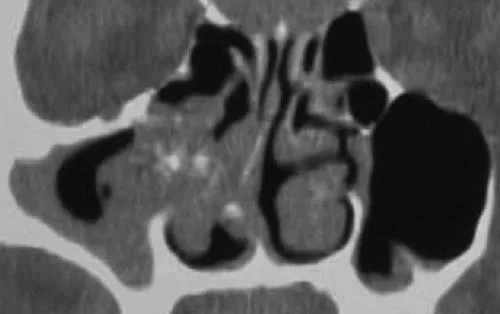
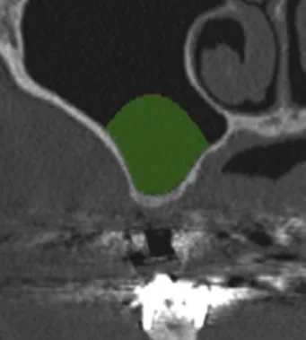

نسخه استخراجشده؛ ترجمه یا تأیید علمی انجام نشده است. وضعیت: captured
پیش از هر پیوند سینوس، تصویر مقطعی را نه فقط برای اندازهگیری، بلکه برای ارزیابی سلامت سینوس بخوان. چند یافتهی رایج و معنایشان:
سطح مایع–هوا — خط رادیواپک صاف داخل سینوس که با رینوسینوزیت حاد همخوان است. این یعنی سینوس همین حالا درگیر است.
التهاب پلیپوئید — الگویی که با رینوسینوزیت آلرژیک همخوان است و اغلب دوطرفه دیده میشود.
سودوکیست و کیست احتباسی — ضایعاتی که در کف سینوس دیده میشوند. نکتهی عملی این است که عود سودوکیست شایع است؛ پس اگر تصمیم به ادامه گرفتی، این ناحیه در پیگیریهای پس از پیوند نیازمند بازبینی دقیق است.
موکوسل — ضایعهای که ماهیت گسترشیابنده دارد؛ نوع ثانویه میتواند سینوس را به دو محفظه تقسیم کند.
و یک هشدار مهم: سینوزیت ادنتوژنیک یکطرفه در CBCT اغلب از قلم میافتد، چون بسیاری از این بیماران بدون علامت هستند. نبود شکایت بیمار، جای بررسی تصویر را نمیگیرد.

کنترااندیکاسیونهای پیوند سینوس به دو دسته تقسیم میشوند: مطلق و نسبی. و تفاوتشان یک تفاوت عملی است، نه لفظی.
کنترااندیکاسیون نسبی یعنی وضعیتی که با درمان یا ارجاع قابل رفع است — پیوند به تعویق میافتد، حذف نمیشود. سینوزیت فعال، پاتولوژی درماننشده، یا اوستیوم مسدود در همین دستهاند: اول درمان، بعد جراحی.
کنترااندیکاسیون مطلق یعنی برنامه باید عوض شود، نه به تعویق بیفتد.
و یک نکتهی طرح درمانی که به آناتومی برمیگردد: اگر موقعیت ایمپلنتهای موردنظر طوری باشد که سینوس در سمت جانبی آنها قرار بگیرد، پیوند سینوس اصلاً کمکی نمیکند — چون فضایی که پیوند میسازد، فضایی نیست که ایمپلنت در آن قرار میگیرد.
این وضعیت مثلاً وقتی پیش میآید که حفرهی بینی روی ریج بیدندان خلفی گسترش یافته و سینوس در کنار آن مانده است؛ در این حالت معمولاً پیوند آنله برای افزایش ارتفاع لازم است. یعنی پیش از تصمیم به پیوند، باید بدانی ایمپلنت دقیقاً کجا خواهد رفت.
و دو عارضهی شناختهشده را از همین حالا بشناس. رینوسینوزیت حاد پس از پیوند دو علت دارد: پاتولوژی از پیش موجود سینوس، و جراحیای که به خود سینوس کشیده شود — مثلاً گرافت اضافی که اوستیوم را ببندد. و پارگی ممبران شایعترین عارضهی حین پیوند است (حدود ۱۰ تا ۳۴ درصد)؛ وقتی کف سینوس از راه استئوتومی بالا برده میشود، اگر ممبران هنگام کاشت پاره شود، رشد ارتفاع استخوان کمتر محتمل است.
قاعدهی این درس: پیوند سینوس یک تصمیم دو مرحلهای است — اول «آیا این سینوس سالم است؟» و بعد «آیا پیوند مشکل این بیمار را حل میکند؟». هر دو باید بله باشند.
